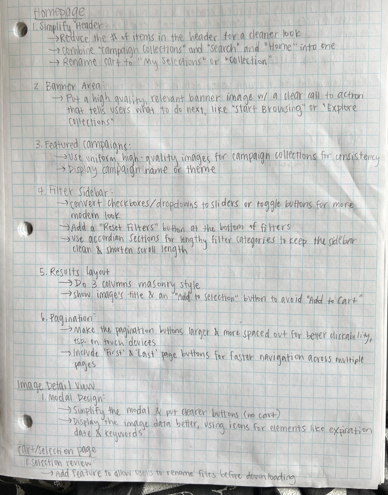
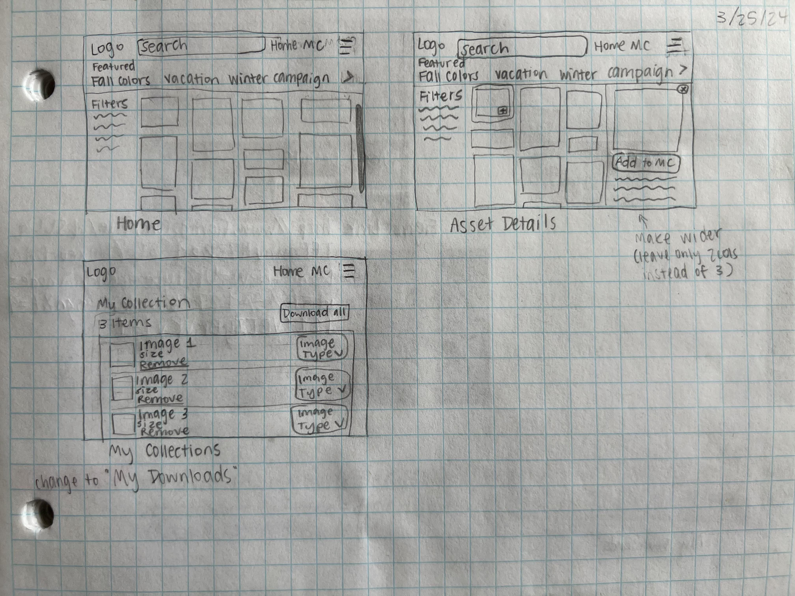
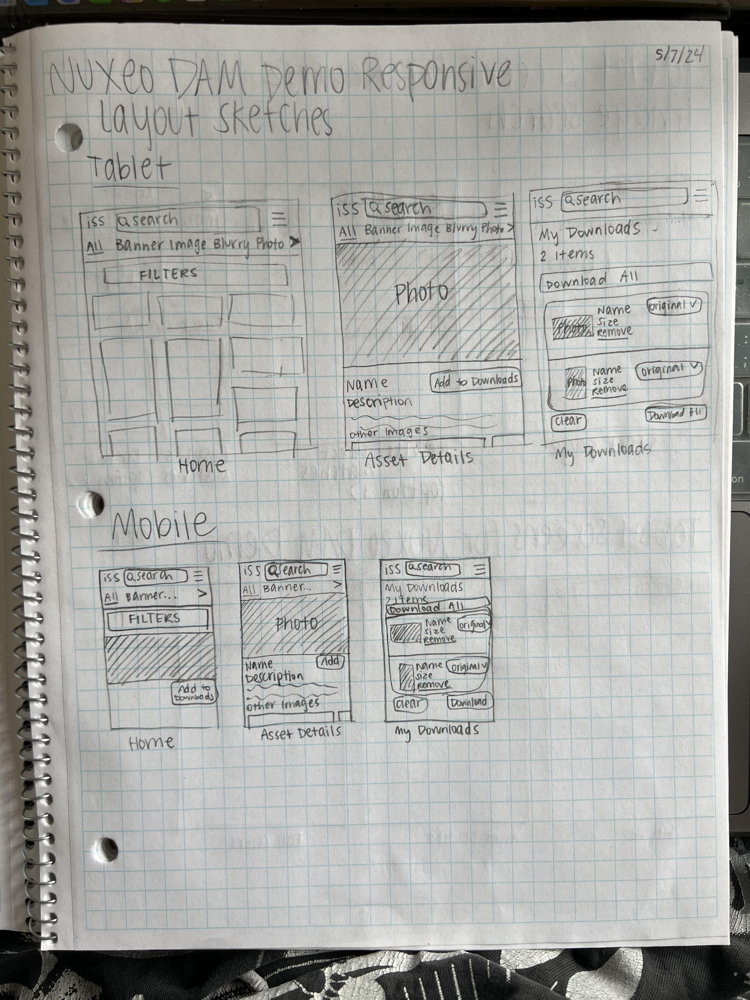
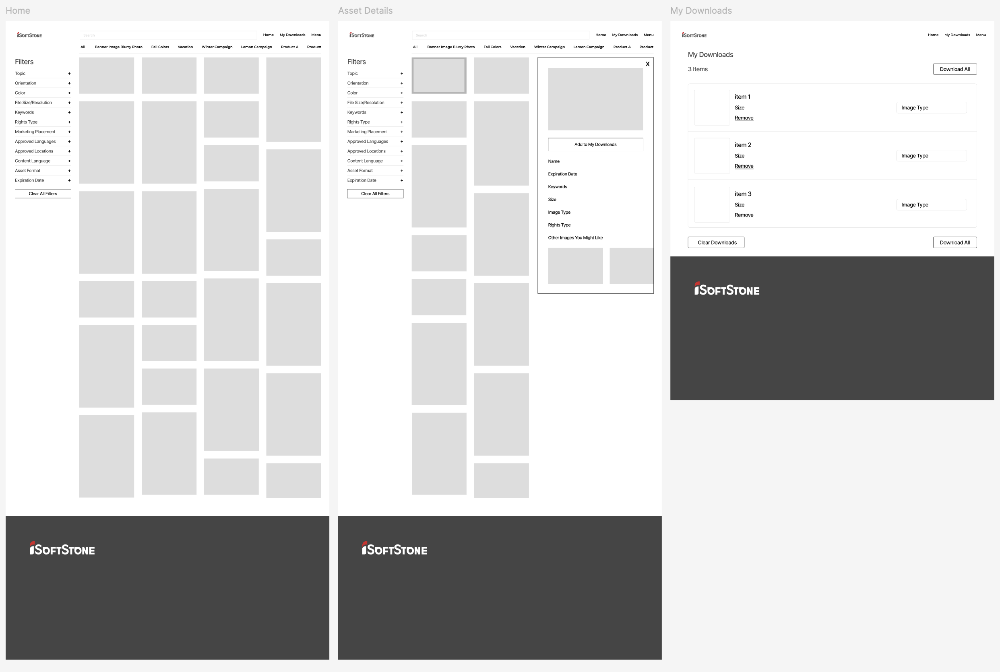
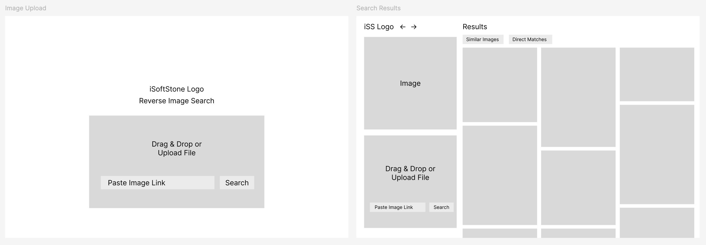

Innovate, design, and enhance user experience. At iSoftStone, I've discovered the value of thoughtful design and attention to detail.
As the sole UX designer, I:
- Created a design system for the company/brand from scratch
- Built a new, responsive version of the Nuxeo DAM Demo
- Designed a reverse image search AI tool
My work has significantly enhanced our product offerings and demonstrated our design skills to future clients.
Pebble Design System
I built a comprehensive design system for the company from scratch. It includes a cover, colors, typography, logos, icons, buttons, input, navigation, footers, viewports, component libraries, templates, and masonry layout for desktop, tablet, and mobile.
Original State of the Nuxeo DAM Demo
The original Nuxeo DAM demo presented several functional shortcomings:
- Limited to Desktop Use: The demo was not responsive, making it inaccessible on mobile and tablet devices. Essential actions, such as those requiring hover states, were only available on desktop.
- Misleading Terminology: The term "cart" implied a purchase process, but it simply added images to a collection for bulk downloading at no cost.
- Redundancies Across Pages: The "home," "campaign collections," and "search" pages essentially served the same purpose, leading to user confusion and inefficiency.
Original Nuxeo DAM Demo UI
Redesign of the Nuxeo DAM Demo
To improve the UI/UX of the original Nuxeo DAM demo, I worked on a comprehensive redesign aimed at improving usability, accessibility, and overall user experience.
The redesigned demo is fully responsive, ensuring seamless functionality across desktop, tablet, and mobile devices.
Key enhancements include:
- Intuitive navigation: The "home," "campaign collections," and "search" pages were consolidated into a unified, efficient search interface, eliminating redundancies and simplifying user interactions.
- Consistent and meaningful terminology: Terms were standardized across the platform, ensuring users clearly understand the actions they are taking. For example, the misleading term "Cart" was replaced with "My Downloads," and "Add to Cart" was replaced with "Add to My Downloads" to better reflect the functionality.
- Streamlined workflows: The overall design was refined to create a seamless and user-friendly experience, addressing the original issues and setting a new standard for digital asset management.
- Efficient use of space: The formatting of photos was changed from all squares to a masonry layout to more efficiently utilize the space on the page.
- Display of results: All results are now displayed on the first page instead of using pagination, reducing the number of clicks for the user. Lazy loading is used to load images efficiently without compromising performance.
Key Features
Brainstorm
Desktop Sketches
Responsive Sketches
Lo-Fi Wireframes
Desktop Version
Tablet Version
Mobile Version
Reverse Image Search AI Tool
I developed the Reverse Image Search AI Tool to enhance the functionality of the Nuxeo DAM Demo.
This tool allows users to upload an image and find direct matches or similar assets within the digital asset management system, streamlining the search process and improving efficiency. The AI-driven approach ensures accurate and relevant search results, making it easier for users to find the assets they need quickly.
Sketches
Reverse Image Search AI Tool Lo-Fi Wireframes
Desktop Version
Tablet Version
Mobile Version
Reflection
My experience redesigning the Nuxeo DAM Demo and developing the Reverse Image Search AI Tool at iSoftStone has been incredibly enriching. Through this project, I learned the importance of user-centered design and the impact of thoughtful design decisions on overall user experience.
One of the key takeaways from this project was the significance of consolidating and simplifying navigation. By eliminating redundancies and creating a more intuitive interface, I was able to greatly enhance the usability of the platform. Standardizing terminology across the platform also proved crucial in ensuring that users clearly understand the actions they are taking.
The implementation of a masonry layout for images and the decision to display all results on the first page with lazy loading demonstrated the importance of efficient space utilization and minimizing user clicks. These changes not only improved the visual appeal but also made the platform more user-friendly.
Developing the Reverse Image Search AI Tool was particularly exciting, as it allowed me to integrate cutting-edge AI technology into the project. This tool significantly streamlined the search process, providing users with accurate and relevant results quickly and efficiently.
Overall, this experience has reinforced my belief in the power of design to solve real user problems and create meaningful, positive user experiences.